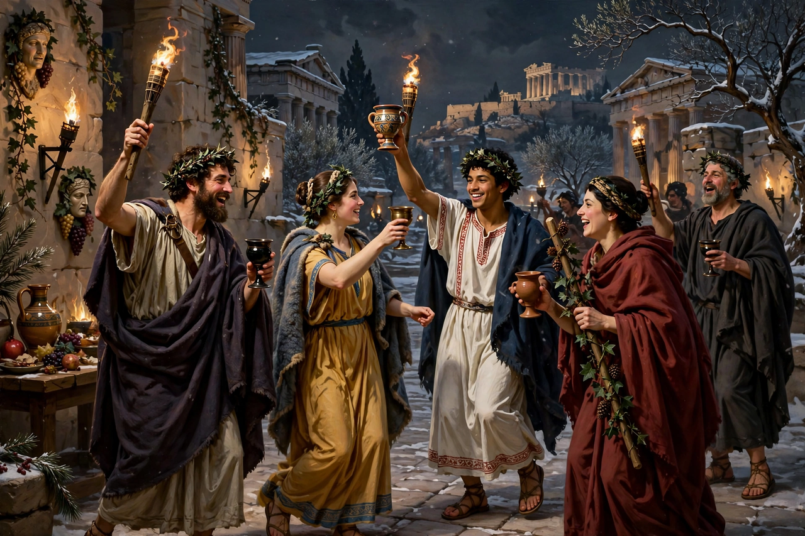

The Lenaia (Greek: Λήναια) was an annual Athenian festival with a dramatic competition, held in honour of Dionysus in the month of Gamelion, roughly corresponding to January. It took its name from the lenos, the wine-press, or from the lenai, the maenads who worshipped the god. Although overshadowed in modern accounts by the great City Dionysia, the Lenaia was a major occasion for comedy in particular.
| Lenaia | |
|---|---|
| Location | Athens |
| Month | Gamelion (mid-winter) |
| Honoured | Dionysus |
| Principal contests | Comedy (from c. 486 BC… at Lenaia c. 440 BC); tragedy added c. 432 BC |
The Lenaia was organised by the archon basileus. Because it fell in mid-winter, when the seas were rough and few foreign visitors came to Athens, its audience was largely Athenian and resident aliens could participate more fully than at the Dionysia — metics could even serve as choregoi and appear in the processions. A ritual feature was a torchlit procession with mockery and jesting, and offerings of a meat-and-barley meal to Dionysus.
Comedies were staged at the Lenaia from about 440 BC and tragedies from about 432 BC; comedy held pride of place, and the festival was a prestigious showcase for Aristophanes, whose Acharnians, Knights, Wasps and Frogs were produced there. Two tragedians competed with two plays each, while five comic poets presented one play apiece. Victors' records preserve much of our knowledge of lost Greek drama. The contests were held in the Theatre of Dionysus on the south slope of the Acropolis.
See also: Dionysia · Ancient Greek comedy